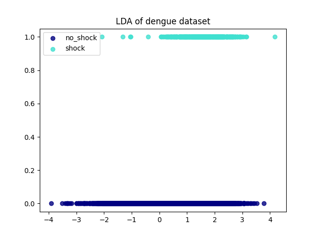

Note
Click here to download the full example code
LDA for dimensionality reduction (dengue)¶
Training attributes: age, weight, plt, haematocrit_percent, body_temperature.
LDA was used with the 5 features above to find a linear combination of them which best separates the shock and no_shock classes.
13 14 15 16 17 18 19 20 21 22 23 24 25 26 27 28 29 30 31 32 33 34 35 36 37 38 39 40 41 42 43 44 45 46 47 48 49 50 51 52 53 54 55 56 57 58 59 60 61 62 63 64 65 66 67 68 69 70 71 72 73 74 75 76 77 78 79 80 81 82 83 84 85 86 87 88 89 90 91 92 93 94 | import pandas as pd
import numpy as np
from sklearn.model_selection import train_test_split
from sklearn import preprocessing
from sklearn.discriminant_analysis import LinearDiscriminantAnalysis
import matplotlib.pyplot as plt
from pkgname.core.AE.autoencoder import set_seed
from pkgname.utils.data_loader import load_dengue, IQR_rule
SEED = 0
# Set seed
set_seed(SEED)
features = ["dsource","date", "age", "gender", "weight", "bleeding", "plt",
"shock", "haematocrit_percent", "bleeding_gum", "abdominal_pain",
"ascites", "bleeding_mucosal", "bleeding_skin", "body_temperature"]
df = load_dengue(usecols=['study_no']+features)
for feat in features:
df[feat] = df.groupby('study_no')[feat].ffill().bfill()
df = df.loc[df['age'] <= 18]
df = df.dropna()
df = df.groupby(by="study_no", dropna=False).agg(
dsource=pd.NamedAgg(column="dsource", aggfunc="last"),
date=pd.NamedAgg(column="date", aggfunc="last"),
age=pd.NamedAgg(column="age", aggfunc="max"),
gender=pd.NamedAgg(column="gender", aggfunc="first"),
weight=pd.NamedAgg(column="weight", aggfunc=np.mean),
bleeding=pd.NamedAgg(column="bleeding", aggfunc="max"),
plt=pd.NamedAgg(column="plt", aggfunc="min"),
shock=pd.NamedAgg(column="shock", aggfunc="max"),
haematocrit_percent=pd.NamedAgg(column="haematocrit_percent", aggfunc="max"),
bleeding_gum=pd.NamedAgg(column="bleeding_gum", aggfunc="max"),
abdominal_pain=pd.NamedAgg(column="abdominal_pain", aggfunc="max"),
ascites=pd.NamedAgg(column="ascites", aggfunc="max"),
bleeding_mucosal=pd.NamedAgg(column="bleeding_mucosal", aggfunc="max"),
bleeding_skin=pd.NamedAgg(column="bleeding_skin", aggfunc="max"),
body_temperature=pd.NamedAgg(column="body_temperature", aggfunc=np.mean),
).dropna()
df = IQR_rule(df, ['plt'])
mapping = {'Female': 0, 'Male': 1}
df = df.replace({'gender': mapping})
info_feat = ["dsource", "shock", "bleeding", "bleeding_gum", "abdominal_pain", "ascites",
"bleeding_mucosal", "bleeding_skin", "gender"]
data_feat = ["age", "weight", "plt", "haematocrit_percent", "body_temperature"]
train, test = train_test_split(df, test_size=0.2, random_state=SEED)
train_data = train[data_feat]
test_data = test[data_feat]
train_info = train[info_feat]
test_info = test[info_feat]
scaler = preprocessing.StandardScaler().fit(train_data)
train_scaled = scaler.transform(train_data.to_numpy())
test_scaled = scaler.transform(test_data.to_numpy())
y = train_info['shock'].to_numpy()
lda = LinearDiscriminantAnalysis()
X_r = lda.fit(train_scaled, y).transform(train_scaled)
colors = ['navy', 'turquoise']
lw = 2
plt.figure()
for color, i, target_name in zip(colors, [0, 1], ['no_shock', 'shock']):
plt.scatter(X_r[y == i], [i] * len(X_r[y == i]), alpha=.8, color=color,
label=target_name)
plt.legend(loc='best', shadow=False, scatterpoints=1)
plt.title('LDA of dengue dataset')
plt.show()
|
Total running time of the script: ( 0 minutes 2.406 seconds)